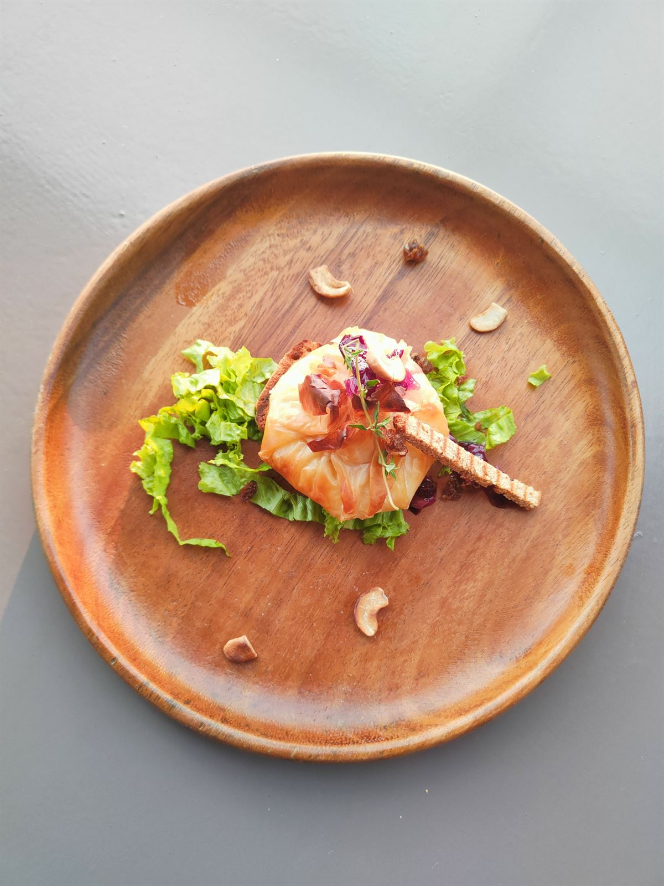
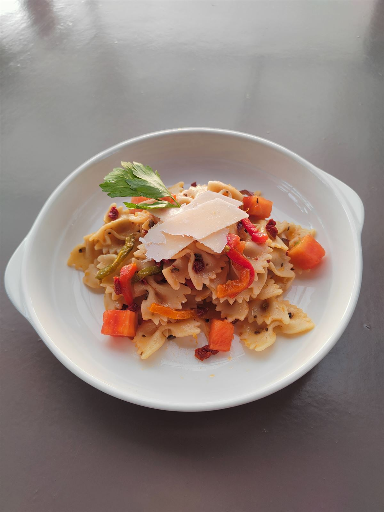
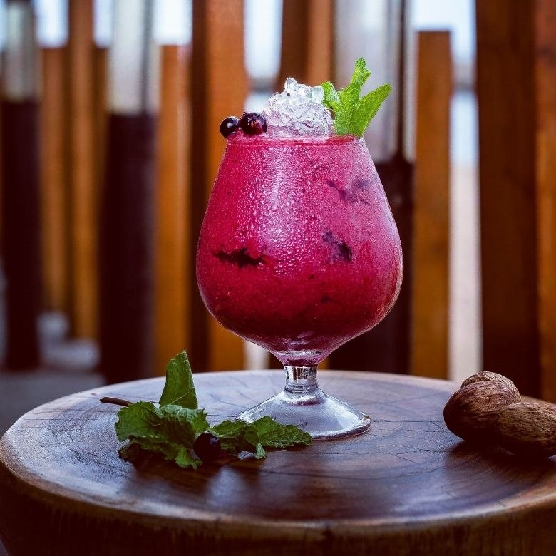
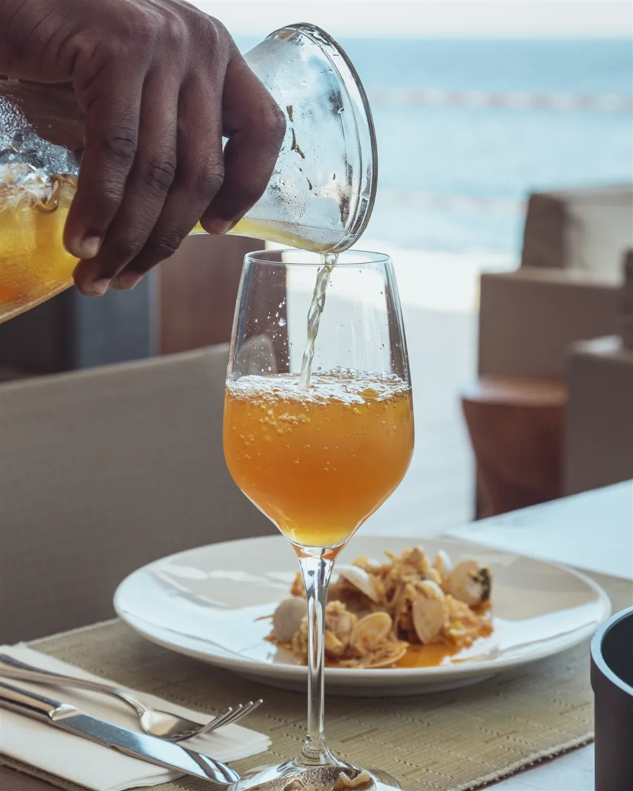
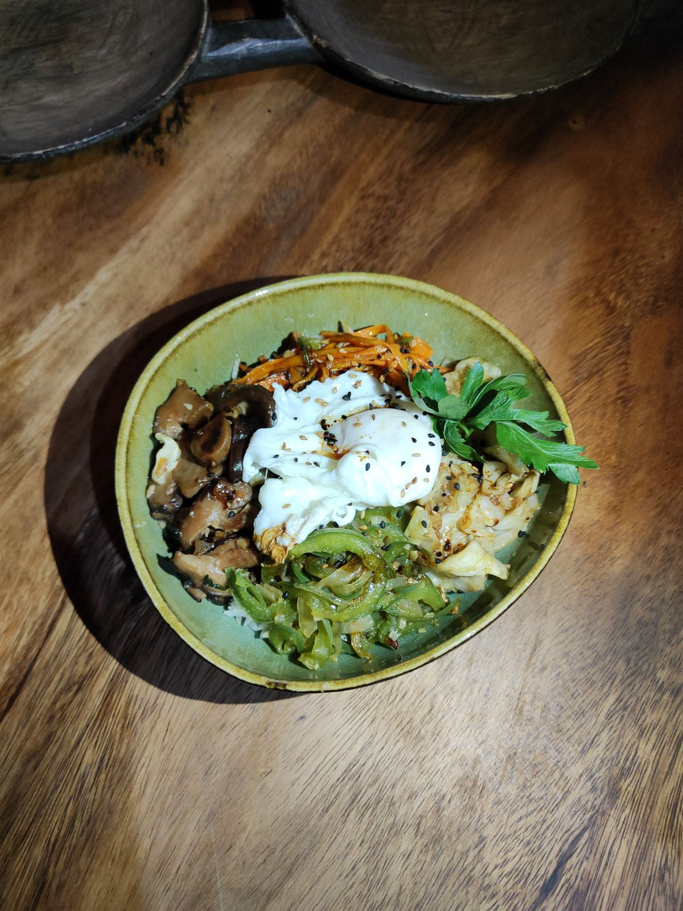
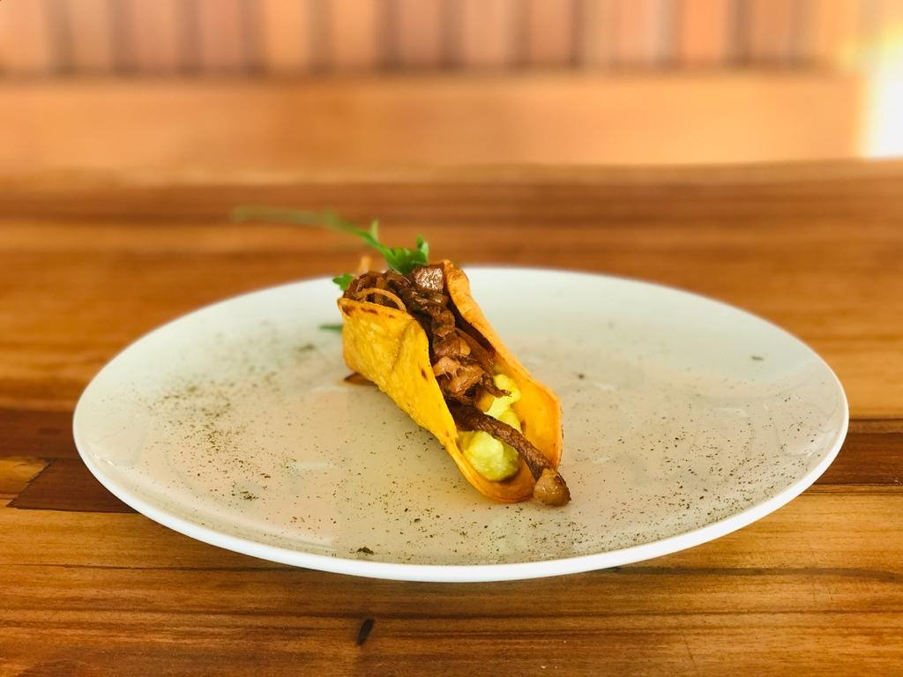

Galeriamomentos na Ilha
Um diário visual dos pratos, dos espaços e dos fins de tarde que fazem o Café del Mar.













Um diário visual dos pratos, dos espaços e dos fins de tarde que fazem o Café del Mar.





